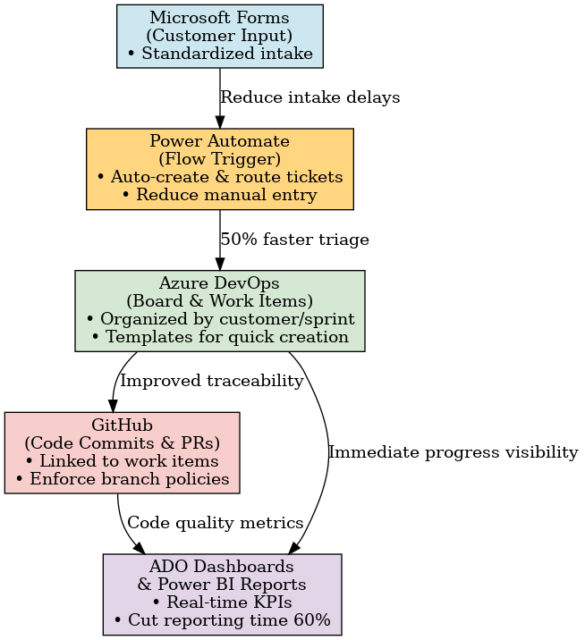

About Me
Hands-on Azure DevOps Engineer with 5+ years of experience designing, configuring, and automating workflows, boards, and dashboards. Skilled in integrating Azure DevOps with GitHub, Power Automate, and Power BI to support Agile transformation, DevOps reporting, and multi-team collaboration. Proven ability to deliver scalable CI/CD pipelines and cloud solutions across GCP, AWS, and Azure.
Featured Project — ADO Implementation for ACNS/ACMS
Marine Rescue Technologies (2021–2023)
What I built
- Customer-organized ADO boards with Areas & 2-week Iterations
- Reusable work item templates for fast, consistent intake
- MS Forms -> Power Automate -> ADO: auto-create/route tickets & Teams alerts
- GitHub commits/PRs linked to ADO work items; branch policy enforcement
- Manager dashboards: sprint burndown, bug aging, workload by customer
Impact
- ~50% faster ticket triage via automation
- ~20% improvement in on-time sprint delivery
- ~60% less time spent on weekly reporting
Workflow Diagram
Automation & integration flow: Forms -> Power Automate -> ADO -> GitHub -> Dashboards/Power BI
Compliance Test Architecture in ADO
HIPAA / PCI initiatives
- Structured ADO Test Plans/Suites/Cases linked to features & stories
- Evidence attachments required before Done (screenshots, logs)
- Power Automate alerts: failed tests auto-create bugs & notify Teams
- Compliance dashboard: pass/fail trends, SLA watchlist
- Audit prep time reduced ~60%
- Escaped defects reduced ~25%
- End-to-end traceability for audits
Resume Highlights
- 5+ years configuring and managing Azure DevOps environments
- Strong knowledge of work item taxonomy, processes, and reporting in ADO
- GitHub–ADO integration for full DevOps traceability
- Automation using Power Automate for workflow and ticket routing
- Agile backlog management, ideation workflows, and test plan architecture
- Collaborated with Power BI teams to expose ADO data for executive dashboards
Let’s work together
Certifications
- HashiCorp Certified Terraform Associate (003) — Mar 2024
- AWS Certified Cloud Practitioner — Sep 2023
- Microsoft Certified: Power Platform Fundamentals (PL-900)(Expected 2025)
- Microsoft Certified: Azure Administrator Associate (AZ-104) (Expected 2025)
- Microsoft Certified: DevOps Engineer Expert (Expected 2025)